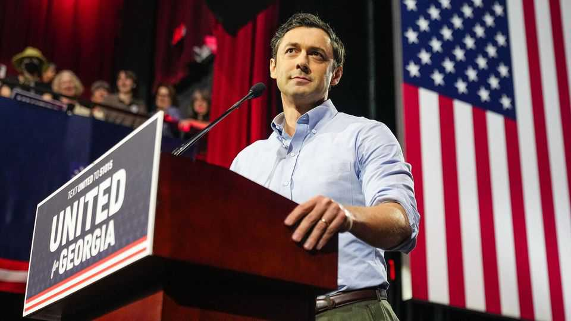

The Jon Ossoff guide to being a Democrat
A rising star in Georgia pairs bland governing with hot rhetoric

Oct 15th 2026
Nearly a decade ago a documentary exposed widespread corruption in one of Africa’s top football leagues. The Ghana Football Association was dissolved and dozens of officials were sacked. “Corruption and self-dealing are at the heart of a lot of the dysfunction and suffering in the world today,” one of the film’s producers said at the time.
Eight years on, that producer is a senator from Georgia running for re-election on the same message. At rallies across the state, Jon Ossoff tells a simple story: Donald Trump and his “Mar-a-Lago mafia” have exploited the rot in American politics, enriching themselves while raising costs for ordinary Americans. In a debate on October 8th, Mr Ossoff pressed his case, claiming his opponent, Mike Collins, had “sold out Georgia in his pathetic, childlike devotion to Donald Trump, voting for the tariffs that have sent groceries soaring, voting for the health-care cuts that have doubled your insurance premiums and voting for the war that sent diesel to its record high”. In a swing state that Mr Trump carried by two points in 2024, Mr Ossoff leads in every major poll and has raised more money than any other candidate in the country this cycle.
Republicans’ current weakness in the state makes it easier for Mr Ossoff to shine. The president’s net approval rating in Georgia, at -31% according to Economist/YouGov polling, is lower than in any other battleground state. And Mr Collins, a congressman, has been dogged by continued revelations of his ties to white supremacists. But as Democrats consider how to succeed beyond the midterms, Mr Ossoff offers one answer. As a campaigner, he is a firebrand. When it comes to governing, he is deeply uncontroversial.
This is not a combination shared by many other Democrats. As the party wrestles with its identity, two camps stand out. First there are the moderates, such as Roy Cooper and Andy Beshear, one a Senate candidate in North Carolina and the other the governor of Kentucky. Then there is the populist left, represented by the likes of Alexandria Ocasio-Cortez and Zohran Mamdani. The two Democratic Socialists from New York have won campaigns by pairing ample charisma with big, leftist ideas, such as universal health care and rent freezes.
Mr Ossoff straddles both worlds. He was first elected in 2021 at the age of 33, the first millennial to serve in the Senate. Running in right-leaning Georgia, he needs the support of Republicans to win, even when the political environment favours the Democrats. Charles Bullock of the University of Georgia estimates that Mr Ossoff can carry Georgia in November only if he earns the vote of 40% of white college-educated voters and at least 20% of white non-college voters, most of whom are conservative.
So, as a senator, Mr Ossoff is competent and bland. Republican strategists begrudgingly admire how responsive he is to constituents, in both Democratic cities and the ruby-red countryside. At a conference of Georgia mayors a few years ago, a panelist asked the crowd who had received a cold call from Mr Ossoff. Nearly every hand went up. In August two Republican mayors from south Georgia endorsed him. Scott James Matheson, of Valdosta, credited Mr Ossoff with securing $2m for buses in the city and said he was the first politician to visit after a hurricane. The other, Julie Smith of Tifton, told local press: “I’m a Republican, but there are times when a person exceeds the party.”
Mr Ossoff’s Senate record is strikingly uncontentious, focused on reforming foster care, making military housing safer and bringing green-manufacturing jobs to Georgia. “The best word to describe Jon is pragmatist,” says Andrew Feiler, a Democratic political adviser in Atlanta. His only vote that might count as controversial was against blocking federal funding for schools that let transgender women compete in women’s sports. “It’s hard to peg where he actually is on an ideological spectrum and that’s a damn good thing,” says John Anzalone, a national Democratic pollster.
As a storyteller, however, Mr Ossoff prefers to be sharp. He writes his own speeches; his team is adept at splicing his appearances into clips that go viral on Instagram. Mr Trump, he says, is a “draft-dodging crook” and “the world’s most famous sore loser”, his aides are “sycophants” and Mr Collins is “a crumbling little bigot”. This summer Mr Ossoff mocked the president for wanting to “travel with Natalie” Harp, a close aide, on his Qatari-gifted jet rather than do his job.
This has the desired effect. After his comment about Ms Harp, MAGA-world erupted on X. Mr Trump nicknamed him “Pee-Wee Herman”; top advisers called him a “feminine theatre kid cosplaying as Barack Obama” and a “radical, extremist Dumocrat”. The spats keep him in the news and cast him as the fighter Democrats are craving. That, in turn, drives donations. The senator has outraised his challenger by a factor of 12.
Mr Ossoff’s stump speech packs a one-two punch. He argues that America’s political system is “coin-operated”, that Mr Trump and his friends have taken corruption to “spectacular new heights” and that this is why “nothing works for ordinary people”. He then calls on Americans, regardless of party, to take back their government from the corrupt elite. To drive the moral point home, he invokes John Lewis, a lion of the civil-rights movement and Democratic congressman whom Mr Ossoff claims as his political mentor. “He kept reminding us that we all live in one American house.”
That helping of positivity is deliberate. “As Democrats we’ve learned our lesson that we have to present an alternative narrative that politics can do good,” says Jonae Wartel, who ran the Georgia Democratic Party’s runoff effort in 2021, which included Mr Ossoff’s race. The senator, she explains, understands that he can’t just be the “anti-guy”. After the midterms, the question will be whether he wants to be the guy. “I have zero interest in running for president in 2028,” Mr Ossoff said in August. Of the senator’s many claims, that’s his least convincing. ■
Clarification: This article originally stated that Jonae Wartel ran Jon Ossoff’s last campaign. More precisely, she managed Georgia Democrats’ Senate runoff campaign in 2021.
Stay on top of American politics with The US in brief, our daily newsletter with fast analysis of the most important political news, and Checks and Balance, a weekly note that examines the state of American democracy and the issues that matter to voters.